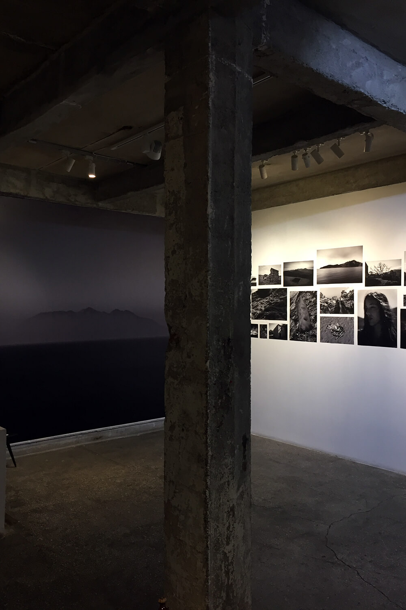
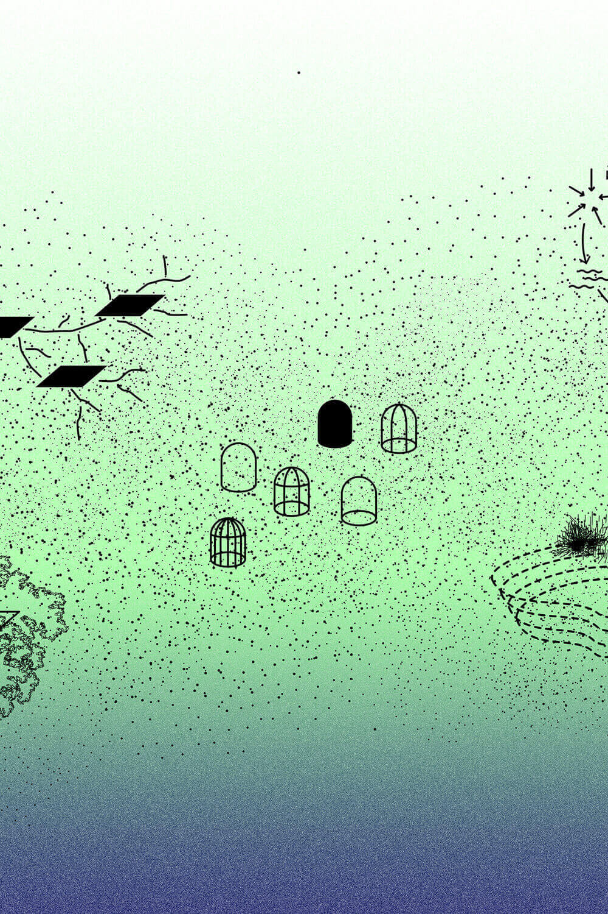
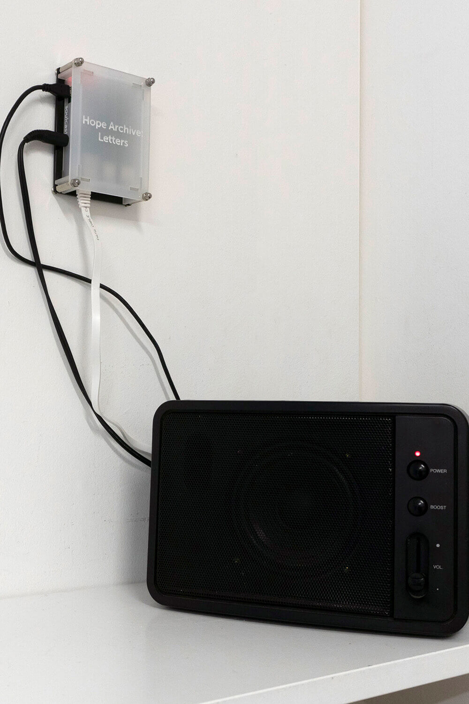
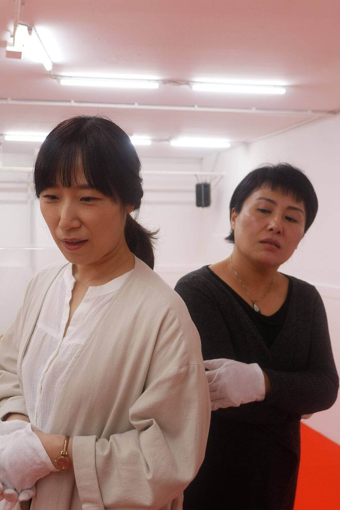
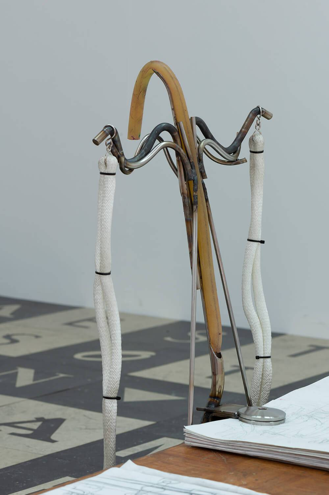
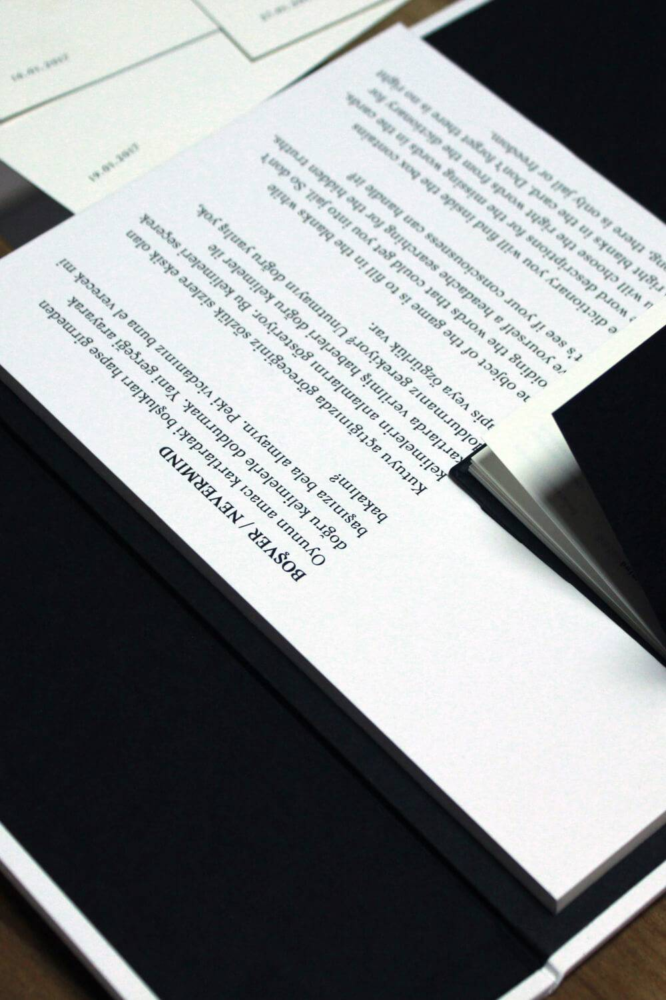
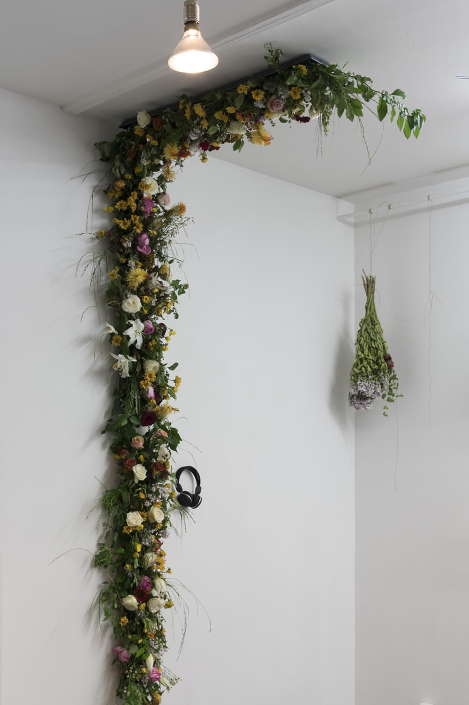
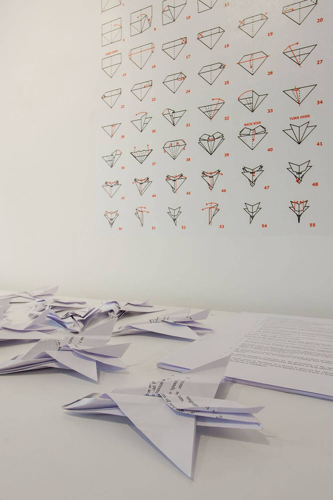

Irina Petrakova's upcoming solo exhibition is dedicated to the changing relationship between the body and its environment. While the concepts of presence and distance are continuously reformulated globally in connection with the ongoing pandemic, the project draws attention to the unconscious and accidental actions that occur when the body inhabits a space.
 The second iteration of the exhibition of recent works by Larissa Araz. Devoted to dissecting language as a system used to promote or undermine freedoms in contemporary social and political landscapes around the world, the artist’s work reveals tensions in the relationship between power and linguistic structures.
 Everything Is New focuses on change in today’s arts infrastructure. Conceived as a means of navigating through the multiplicity of structural changes in today's art institutions, the project starts in the form of a digital exhibition and online publication consisting of commissioned essays and interviews, complemented by artists’ interventions.
 A presentation of recent works by Larissa Araz. Devoted to dissecting language as a system used to promote or undermine freedoms in contemporary social and political landscapes around the world, the artist’s work reveals tensions in the relationship between power and linguistic structures.
 A livestream performance realised by the artist Shen Xin in the framework of Landscape with Bear, an exhibition with the Collection (Unintended) of De Appel.
 Landscape with Bear presents a single continuous topography that blurs the line between art object and display. Building from the proposition that practices of collecting are part of regimes of knowledge-production, this exhibition asks, what kinds of knowledge can emerge from the fragmentary, the uncertain and the unstable?
 The second part of the Russian-Turkish exhibition project set out to raise questions on subtlety in artistic practices within countries that develop hybrid regimes and invited artists to research possible methodologies of survival in the context of (self-)censorship.
 Exploring contemporary methods of information dispersion and dialogic inquiry, Ohne prickelnd, sanft took the form of a zine dealing with key questions regarding art and the politics of collectivity and featuring contributions from 33 artists, curators and writers.
 A two-part project set out to raise questions on subtlety in artistic practices within countries that develop hybrid regimes. By collaborating for six months, five Turkish and five Russian artists researched different methodologies of survival in the context of (self-)censorship.